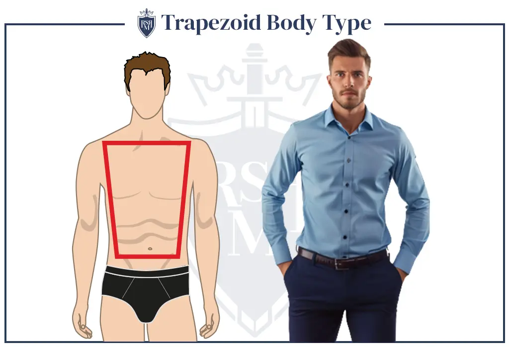

An “average” build refers to what most designers use as the foundation of their designs. In other words – Most off the rack clothing will fit you well – pending minor adjustments. The waist is the narrowest point on an average man’s torso. The rib cage widens steadily up to the collarbone and shoulders, which are the broadest parts of the torso. This gives the body an overall trapezoidal shape with the shorter side at the bottom.
